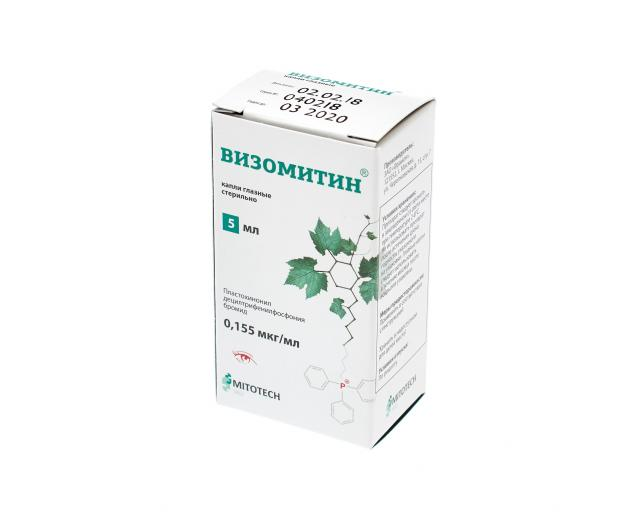

Визомитин

Действующее вещество — митохондриальный антиоксидант SkQ1, химическое название пластохинонилдецилтрифенилфосфония бромид (ПДТФ). Молекула SkQ1 состоит из остатка сильного антиоксиданта — пластохинона, который через линкерную цепь (С10) связан с остатком трифенилфосфина, липофильным катионом, обеспечивающим доставку молекулы SkQ1 внутрь клетки, а в ней — внутрь митохондрии. При применении в низких (наномолярных) концентрациях ПДТФ проявляет высокую антиоксидантную активность. Оказывает стимулирующее действие на процесс эпителизации роговицы, способствует повышению стабильности слезной пленки.